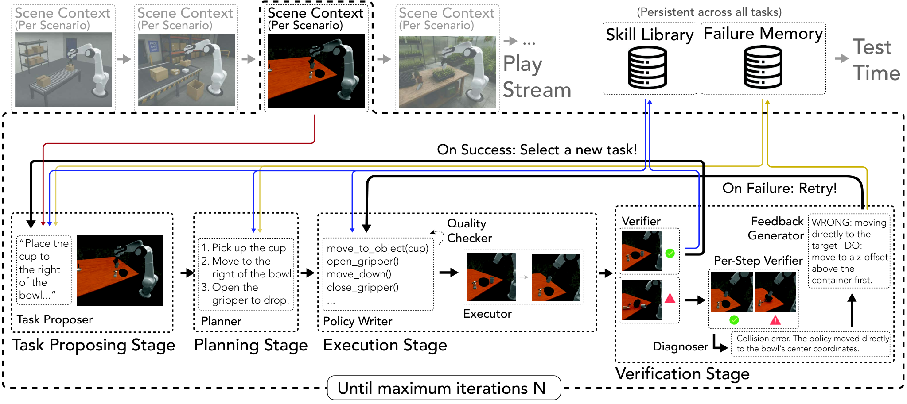

Playful Agentic Robot Learning
自主练习要选“新鲜但学得动”的任务，再把成功代码和失败教训带到后续任务。
Playful Agentic Robot Learning
LIBERO-Pro 主实验：CaP-Agent0 23.2%，RATs 43.8%；真实迁移的两个任务平均 30.0% → 38.8%。
01这篇要解决什么？
如果机器人只在用户给任务后临时写程序，许多困难会被反复发现。Playful Agentic Robot Learning 让 RATs 在没有外部任务指令的 play 阶段主动练习，再把积累的代码技能用于测试。关键问题是练什么、怎样确认学到了，以及积累的能力是否可迁移。
02先看一个场景
顺着论文附录记录的 MolmoSpaces 第 15 轮 play 走一遍。此刻没有人下达任何指令，机器人面前是一张摆着喷瓶、黑布与纸巾盒的场景。如果只在收到任务之后才临时写程序，同样的困难会在每个任务里被重新发现一遍。
03方法怎样运转？

- 01
play 的定义：把外部指令 l 拿掉
标准 Code-as-Policy 给 Agent 的是环境上下文 c、原语函数 f 和语言指令 l，Agent 据此合成可执行程序 π。play 阶段把 l 去掉，Agent 在 play 环境里自己提出并练习任务 τ_t。系统维护两个持久库：技能库 L = L₀ ∪ L_learned，其中 L₀ 就是初始原语 f，L_learned 存从成功执行里抽出的代码技能；失败记忆 M 存失败后蒸馏出的紧凑教训。跑 N 轮之后 L 被冻结拿去做测试任务，主实验 N = 50，底座模型是 gemini-3.1pro-preview，两个 play 环境分别是 LIBERO-PRO 与 MolmoSpaces。
- 02
任务提出：先生成候选池，再用 Goldilocks 打分选一个
提出器 LLM 拿到三样输入：当前场景上下文、技能库的元数据摘要（技能名、描述、可靠性等级与成功统计，但不含源码，以免上下文被代码撑满）、以及最近若干条尝试记录，据此生成候选任务池 T_t 并标出每个候选需要的物体与技能。选择用解析式打分 τ_t = argmax [N(τ)·F(τ)]：新颖项 N(τ) 对每个物体—技能对取 1/√(N(o,s)+1) 再平均，鼓励很少试过的组合；能力前沿项 F(τ) = 4·r̄(1−r̄)，其中 r̄ 是所需技能的 Wilson 下界成功率均值，这条抛物线在 r̄ ≈ 0.5 时取最大，于是太熟（r̄→1）和做不到（r̄→0）的候选都被压低。用 Wilson 下界而非原始成功率，是为了避免一次侥幸成功就把一项少用技能判为可靠；与近期失败高度相似的候选还会被降权。
- 03
任务要先能被实例化：Environment Creator 与 Verifier
选中的任务不会直接开跑。在 LIBERO 上，Environment Creator 把提议转成一份 BDDL 任务规范（objects / init / goal 谓词），做语法与语义校验后实例化对应的 MuJoCo 环境；校验不过允许一次有界修复再验一遍。随后 Environment Verifier 用两个 reset seed 做确定性检查：环境要能实例化与渲染、能暴露模拟器、每个声明的物体实体都要存在、每条目标谓词都能无误求值、初始状态不能有严重穿模。被拒的任务退回提出阶段，不消耗一次执行机会——这一步把“提了一个根本不存在的任务”和“提了一个做不到的任务”分开了。
- 04
执行：带重试预算的 Write-Execute-Verify-Diagnose 内循环
Planner 拿到任务描述、初始观测、从失败记忆检索的教训、原语 API 与激活技能（verified 排在 experimental 之前展示，deprecated 默认隐藏），输出有序计划、给每步标注相关技能并预测可能的失败点；Planner Verifier 在写代码之前先查计划是否与初始观测对得上（场景误判、缺前置、顺序错、物体范围不符），不通过就退回细化，直到通过或耗尽细化预算。之后进入内循环：Policy Writer 写代码（重试时还会拿到逐步验证结果与“哪些代码段已经能跑”的摘要，鼓励局部修改而非整段重写），Quality Checker 静态筛掉语法错误、不存在的 API、无界循环与违规模式，避免把机器人交互预算花在读源码就能发现的错误上。执行后 Goal Verifier 判总成败（程序崩溃一律算失败，即使最终画面看着合理），Per-Step Verifier 结合每步的代码切片、关键运行时数值和前后视觉证据给出步级判决。成功即停；失败则 Failure Diagnoser 给出失败类别、首个失败步与具体修复建议并路由——代码层面回 Policy Writer，计划层面触发重规划，反复卡住的局部物理瓶颈派一个 SubAgent 在同一 reset 状态下单独练这个子动作，直到耗尽重试预算。
- 05
记忆更新：三级可靠度加每 K 轮整理
成功后系统从执行过的代码里抽出自包含、参数化的辅助函数（抽的是可复用行为单元，不是整段任务脚本），补 docstring、静态校验后作为 experimental 技能入库；失败则把该集记入 M，并蒸馏成一条紧凑教训（什么条件下避免什么做法、改用什么修正），Planner 日后按任务与物体重叠度检索这些教训。技能走三级生命周期：新技能是 experimental，累计至少 3 次使用且经验成功率不低于 0.5 升为 verified，至少 10 次使用且成功率不高于 0.2 标为 deprecated 并默认隐藏，verified 也会因持续表现差被降级。每 K 轮（默认 K = 5）Memory Curator 合并或重写近似重复的技能、清理冗余教训；若近期失败反复暴露同一项缺失能力，Skill Proposer 会从已有原语起草一个候选辅助函数作为 experimental 入库，靠后续使用挣可靠度。测试阶段任务提出器与 Memory Curator 一并关闭，只用冻结的 L。
L = L0(原语) ∪ L_learned; M = 失败教训库 # play 期没有外部指令 l
for t in range(50):
cands = Proposer(场景上下文, L 的元数据摘要, 最近尝试记录)
τ = argmax [ N(τ) · 4·r̄(1−r̄) ] # 新颖度 × 能力前沿，r̄ 取 Wilson 下界
env = Creator(τ); if not Verifier(env, 2 个 seed): continue # 退回提出，不计执行
plan = Planner(τ, obs, 检索到的教训, L) # verified 先于 experimental 展示
while 未成功 and 未耗尽重试预算:
code = PolicyWriter(plan, 上轮诊断); QualityChecker(code) # 静态拦截
ok = GoalVerifier(run(code)) 且 PerStepVerifier 逐步判决
if not ok: Diagnoser → 改码 / 重规划 / 派 SubAgent 单练子动作
L += 抽取的参数化函数(experimental) if ok else M.add(蒸馏教训)
if t % 5 == 0: Curator(合并去重); SkillProposer(补缺失能力)
# 测试期：冻结 L，关闭 Proposer 与 Curator方法与结果的原文定位见本页引用。
04跟着这个场景走一遍
教学推演：回到上面的场景。第一步，此刻没有人下达任何指令，技能库里是 22 项：13 个原语（感知类如 get_observation、segment_sam3_text_prompt、point_prompt_molmo、vlm_verify，抓取规划与控制类如 plan_grasp_from_point_clouds、solve_ik、goto_pose，夹爪类如 open_gripper、close_gripper）加上 9 项此前 play 学来的技能。第二步，场景 grounding 标出五个可见物体——蓝色喷瓶、黑布、棕色纸巾盒、马桶、白色柜子；可达性过滤把马桶去掉，剩四个作为提议目标。提出器据此生成 5 个候选，按新颖度乘能力前沿排序，“抬起纸巾盒”以综合分 0.6236 胜出：它足够新，同时离当前抓取能力不算太远。黑布那条候选在进入排序前就被否决，因为当前 bridge 配置不支持这种交互。第三步是容易被忽略的一环：被否决的候选退回提出阶段，不算一次执行机会——在 MolmoSpaces 里是重绑环境后检查目标是否仍能被视觉定位，在 LIBERO 里则是生成 BDDL 规范并跑两个 seed 的确定性检查。第四步，Planner 排出计划并给每步挂技能，比如“定位纸巾盒”会挂上已有的 localize_object_with_molmo_sam3——这条技能在第 15 轮的原始成功率只有 0.3125（用过 32 次），仍是 experimental，所以它排在 verified 技能之后展示。Quality Checker 先挡掉不合法代码，执行后 Goal 与 Per-Step 两级验证给出判决，失败则由 Failure Diagnoser 定位到首个失败步再重试。第五步，若这次抬起成功，抽出来的不是“抬纸巾盒”这段脚本，而是一段参数化的可复用函数，先作为 experimental 入库，要用满三次且成功率不低于 0.5 才升 verified。这套机制的代价写在附录的 token 统计里：失败诊断一项就占 play 期 token 的 40.5%，是最大开销项。它也不保证越练越强——RoboSuite 迁移里双臂交接反而从 24% 降到 20%。真正值得记住的是论文那个算力对齐对照：把 play 花掉的 token 折算到测试期，CaP-Agent0 可以从 10 轮重试放宽到约 15 轮，问题于是变成“同样的算力，花在事后重试还是事前练习”。
05实验到底表现怎样？
主实验在 LIBERO-Pro 的 60 个任务条件、600 次 rollout，以及 MolmoSpaces 的 40 项任务、400 次 rollout 上评测。技能库还迁移到 RoboSuite 和真实机器人；下表各行属于不同评测，不是同一难度排名。
作者报告的实验结果 · v1
| 主实验 / 迁移 | CaP-Agent0 | 加入 RATs 机制或技能 |
|---|---|---|
| LIBERO-Pro · 完整系统 | 23.2% | 43.8% |
| MolmoSpaces · 完整系统 | 21.0% | 38.0% |
| RoboSuite · 技能迁移 | 141/350（40.3%） | 172/350（49.1%） |
| 真实两任务 · 技能迁移 | 24/80（30.0%） | 31/80（38.8%） |
原始证据：任务选择、执行和记忆：§3 ↗ · 主实验与迁移：表 1–3 ↗ · 拆分 play 与执行器：表 4 / §4.4 ↗
真实迁移确有收益，但最终成功率只有 38.8%，远没有解决所有问题。迁移也并非每项都正收益：RoboSuite 双臂交接从 24% 降到 20%，螺母装配仍为 0%。
06收益来自哪里，又停在哪里？
消融与机制证据
表 4 固定 CaP-Agent0 执行器时，无 play / 随机 play / 好奇心 play 分别为 23.2% / 24.7% / 32.3%。仅换 RATs 执行器、不 play 可到 36.3%；两者结合的消融为 44.3%。该消融部分采用每任务 5 次，不能与主表 43.8% 当作同一次实验。
结论的适用边界
模型来源这一层很单薄，也正是这篇的成本所在：整个系统不训练任何模型权重，play 与测试都由现成的 gemini-3.1pro-preview 驱动，底层感知控制原语沿用 CaP-Agent0 那一套（Molmo 指点、SAM3 分割、IK 与抓取规划），学到的“技能”是一批经过验证的 Python 函数，所以迁移时靠的是把代码检索进上下文，不需要微调。代价换成了交互与 token：附录的分解显示 Failure Diagnoser 一项占 play 期 token 的 40.5%，Policy Writer 次之，也就是说主要开销在反复失败后的诊断与改写，而不是任务提出。play 需要额外交互、计算和任务验证；无外部目标不等于没有成功判据，应把探索预算与测试预算分别报告，也要控制技能是否提前接触过测试任务。论文自己做了算力对齐对照——把 play 的摊销 token 折给测试期让 CaP-Agent0 跑约 15 轮，与标准 10 轮加 RATs 技能库相比——读这类“积累型”方法时应当要求同样的对照。
07放回全书的脉络
与 Voyager 同看课程与积累，与 ASPIRE 同看经验的内容：Playful 更强调主动探索的任务与代码能力，ASPIRE 更强调从失败中提炼可迁移修复。
08把阅读变成一个小研究
固定 50 轮练习预算，比较随机任务、最难任务、适中难度任务；用相同测试执行器和未见任务测试技能库。
先自己回答：这项实验怎样才有解释力？
只看训练期成功率会偏爱简单任务。更有意义的是下游增益 / 探索成本，以及负迁移发生在哪些技能上。
- 用自己的话说出这篇改变了哪个模块。
- 画出它的输入、输出和一次失败如何被处理。
- 复述一个结果，同时说清基线、指标与实验条件。这一问不给答案，材料在第 05 节。
先自己答，再看前两问的参考答案
这篇改了哪个模块改的是获取技能的时机：技能不再等用户下达指令之后临时写，而是在一个把外部指令 l 拿掉的 play 阶段由 Agent 自己提出任务、自己练，练够轮数后把技能库冻结，再拿去做测试任务。配套换掉的是「该练什么」的判据，Goldilocks 打分用新颖项乘能力前沿项，把太熟与做不到的候选一起压低，技能可靠性按 Wilson 下界估计而不是原始成功率，以免一次侥幸成功就把少用技能判为可靠。它不训练任何模型权重，感知与控制原语沿用 CaP-Agent0 那一套，动作空间没变；积累下来的技能是一批参数化的 Python 函数，迁移靠把代码检索进上下文，不靠微调，代价转移到了交互与 token 上。
输入、输出与一次失败如何被处理play 期的输入里没有指令：提出器拿到的是当前场景上下文、原语 f、技能库 L 的元数据摘要（技能名、描述、可靠性等级与成功统计，但不含源码，以免上下文被代码撑满）、最近若干条尝试记录，以及从失败记忆 M 按任务与物体重叠度检索出的教训；可见且可达的物体由外部的场景 grounding 与可达性过滤给出，环境实例则由 Environment Creator 造。输出先是一个 play 阶段的候选任务，在 LIBERO 上还要先被写成 BDDL 任务规范才能实例化成环境，随后才是 Planner 的有序计划与 Policy Writer 的一段可执行代码，交给环境去跑，成功的执行再被抽成参数化辅助函数入库。这一篇的失败处理不仅有，而且分得清「提错了任务」和「做错了事」：Environment Verifier 用两个 reset seed 做确定性检查，被拒的任务退回提出阶段、不消耗一次执行机会；Planner Verifier 在写码之前查计划与初始观测对不对得上，Quality Checker 静态挡掉语法错误、不存在的 API 与无界循环；执行后 Goal Verifier 判总成败，有结构化谓词时按环境状态求值、否则走自定义检查或视觉判断，程序崩溃一律算失败，Per-Step Verifier 再结合代码切片、关键运行时数值与前后视觉证据给出步级判决。Failure Diagnoser 据此给出失败类别、首个失败步与修复建议并路由回改码、重规划或派 SubAgent 单练子动作，失败集蒸馏成教训写进 M，技能按 experimental、verified、deprecated 三级升降；需要留意的是除了那条谓词求值，其余判定仍出自与写码者同一底座的模型，分工清楚并不等于判据独立。
自主练习要选“新鲜但学得动”的任务，再把成功代码和失败教训带到后续任务。
↗带着位置回到原文
首发日期用于时间排序；以下方法与结果对应 v1。数据为论文作者报告，本讲义没有独立复现实验。
QA就这一页提问或讨论
对某个数字、某条边界或某个推演有疑问，欢迎直接留言：讨论按页面分开，回复会保留在 XinrunXu/awesome-agentic-robotics-papers 的 Discussions 里，需要一个 GitHub 账号。